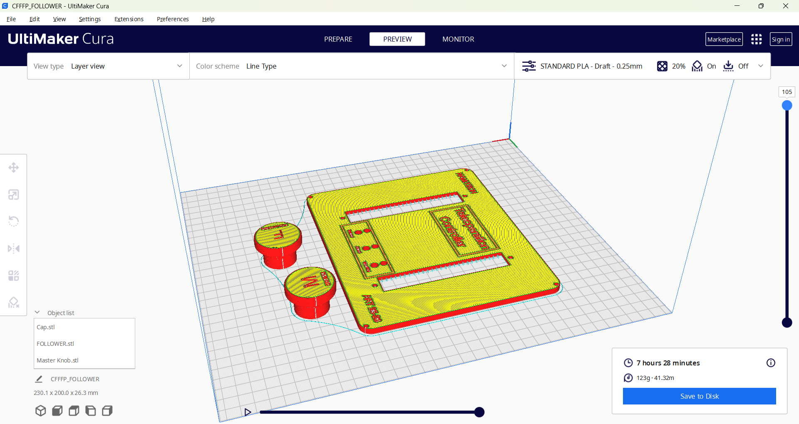
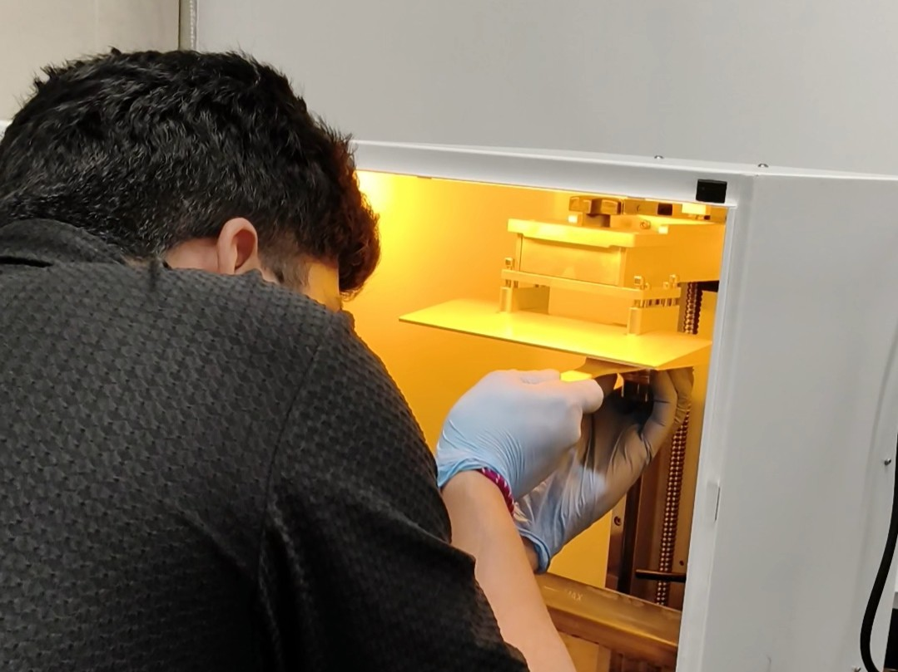
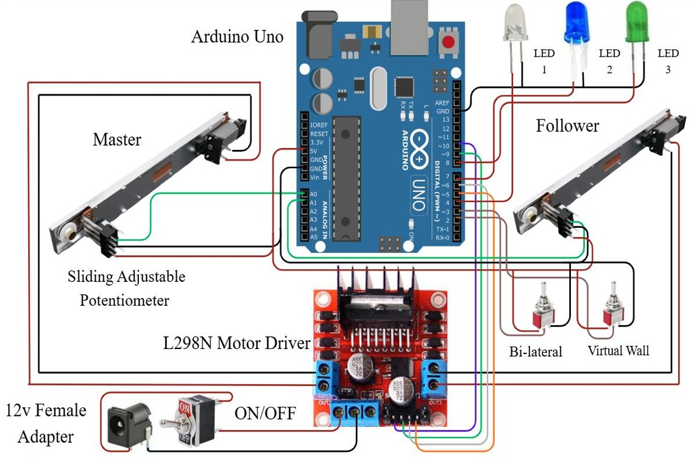

About
Teleoperation Controllers were developed to enable humans to operate robotic systems safely and precisely from a remote location, particularly in environments that are hazardous, inaccessible, or demand human intuition and decision-making. These controllers enhance task accuracy while minimizing risk to human operators. Teleoperation control strategies can be categorized as follows:
- Unilateral Control: Unilateral control involves one-way communication from the master (human interface) to the follower (robot). In this mode, the operator sends commands to the robot without receiving force or tactile feedback. It is commonly used in applications where environmental interaction forces are minimal or feedback is not critical.
- Bilateral Control: Bilateral control enables two-way communication between the master and follower devices. Along with motion commands from the operator, force or sensory feedback is transmitted back to the user, allowing for more precise manipulation and improved perception of the remote environment. This approach is widely used in tasks requiring high accuracy and delicate handling.
- Virtual Wall Control: Virtual wall control introduces a software-based safety mechanism that restricts the robot’s movement within predefined boundaries. When the robot approaches these virtual constraints, resistive forces or motion limits are applied to prevent collisions or unsafe operations, thereby enhancing system safety and operational reliability.
Fabrication

Slicing the Parts

SLA Printing

Circuit Diagram